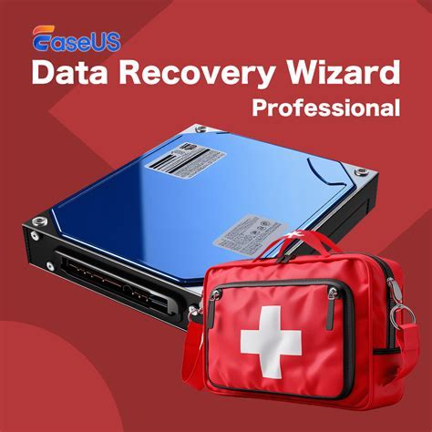
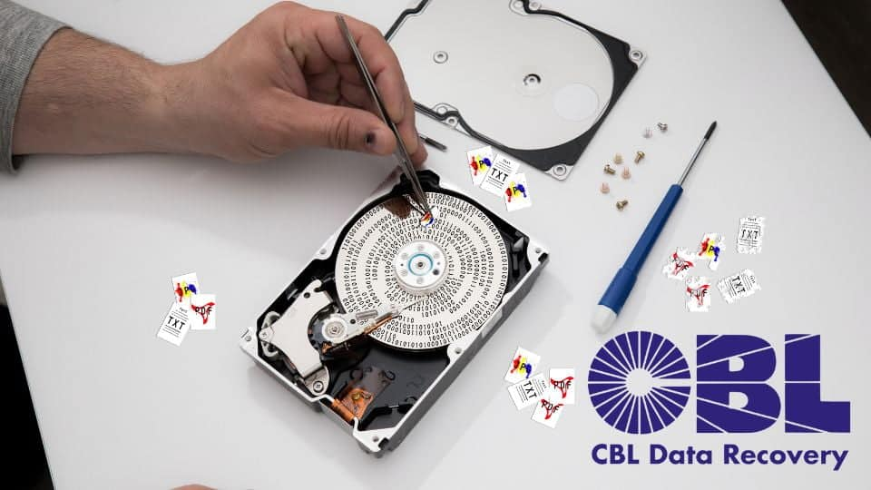
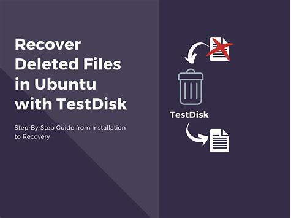
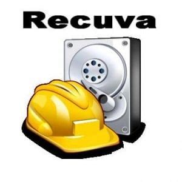

DATA RECOVERY WIZARD |
 |
This is the free data recovery software to recover deleted flies,folders and partitions. Restore Drive filr folder and flash media partition disk repair utilities and digital camera ipod mobile cell phone , flash memory card unerase tools. This application utulizes a wizard user interface to guide users through the data recovery process. |
CBL DATA RECOVERY |
 |
This is the data recovery services for failed hard drives in laptops, SSDs,Desktops, servers and RAID arrays and also recovery for tape cartridges, USB flash drives and other portable storage |
TESTDISK |  |
TestDisk is an open software tools to recover lost partitions and flies from various storage devices. Testdiski checks and repairs partition and helps people to get their long lost information even if they change their phone or there computers crashes |
RECUVA |
 |
Recuva is free utility software for pc developed by Gen Ditigal Inc. It is a data recovery tool that can help get back lost accidentally deleted data and lost flies after computer crash |